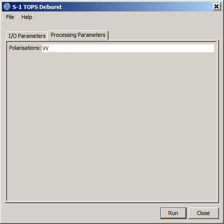

| TOPSAR Deburst and
Merge |
|
For the TOPSAR IW and EW SLC products, each product consists of one image per swath per polarization. IW products have 3 swaths and EW have 5 swaths. Each sub-swath image consists of a series of bursts, where each burst was processed as a separate SLC image. The individually focused complex burst images are included, in azimuth-time order, into a single subswath image, with black-fill demarcation in between, similar to the ENVISAT ASAR Wide ScanSAR SLC products.
For IW, a focused burst has a duration of 2.75 sec and a burst overlap of ~50-100 samples. For EW, a focused burst has a duration of 3.19 sec. Overlap increases in range within a sub- swath.
Images for all bursts in all sub-swaths of an IW SLC product are re-sampled to a common pixel spacing grid in range and azimuth. Burst synchronisation is ensured for both IW and EW products.
Unlike ASAR WSS which contains large overlap between beams, for S-1 TOPSAR, the imaged ground area of adjacent bursts will only marginally overlap in azimuth just enough to provide contiguous coverage of the ground. This is due to the one natural azimuth look inherent in the data.
For GRD products, the bursts are concatenated and sub-swaths are merged to form one image. Bursts overlap minimally in azimuth and sub-swaths overlap minimally in range. Bursts for all beams have been resampled to a common grid during azimuth post-processing.
In the range direction, for each line in all sub-swaths with the same time tag, merge adjacent sub-swaths. For the overlapping region in range, merging is done midway between subswaths.
In the azimuth direction, bursts are merged according to their zero Doppler time. Note that the black-fill demarcation is not distinctly zero at the end or start of the burst. Due to resampling, the data fades into zero and out. The merge time is determined by the average of the last line of the first burst and the first line of the next burst. For each range cell, the merging time is quantised to the nearest output azimuth cell to eliminate any fading to zero data.

GPT operator: TOPSAR-Deburst. Generated from the operator source; parameter names are those used in GPT and graph XML.
| Parameter | Type | Default | Allowed values | Unit | Description |
|---|---|---|---|---|---|
selectedPolarisations | String[] | The list of polarisations |